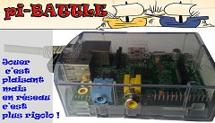
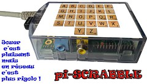
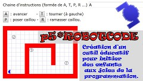
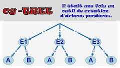
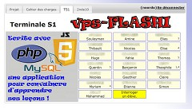
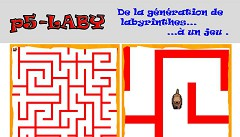

Projets
2017-2018
6 projets :
- ISN_1718A-p5-AddiBulle
- ISN_1718B-p5-AutoCalcul
- ISN_1718C-p5-LocoMot
- ISN_1718D-p5-LogiTablor
- ISN_1718E-p5-MathemaTir
- ISN_1718F-p5-SyllaVol
Des repères visuels seront ajoutés ultérieurement.
2016-2017
6 projets : ISN_4x1_Projet_piBATTLE, ISN_4x2_Projet_piSCRABBLE, ISN_4x3_Projet_p5ROBOTCODE, ISN_4x4_Projet_cyTree, ISN_4x5_Projet_vpsFLASHI, ISN_4x6_Projet_p5LABY






Les liens sur les images sont cassés et seront rétablis ultérieurement.
2015-2016
4 projets : ISN_3x1_Projet_FRACTALES, ISN_3x2_Projet_MASTERMIND2, ISN_3x3_Projet_DIJKSTRA, ISN_3x4_Projet_FAVICON


Les liens sur les images sont cassés et seront rétablis ultérieurement.
2014-2015
3 projets : MASTERMIND, PICAM, TK102
Les liens sur les images sont cassés et seront rétablis ultérieurement.
2013-2014
1 projet : RNoordo